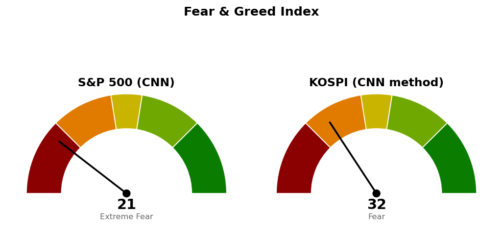

2026-10-23 장전 예측 4건: 4건 중 3건 적중(75.0%)
| 예측 | 근거 | 실제 | 판정 |
|---|---|---|---|
| 나스닥 종합 종가 25,967 하회 | 사다리 취소선 25,967 — 10/22 종가 26,009(ATR의 0.11배 위), 10/22 저가 25,918, 나스닥 선물 -0.34% | 종가 25,955 (-0.21%) | 적중 |
| S&P 500 장중 고가가 7,701 아래 유지 | 기준선 7,701 미회복 — 10/22 고가 7,703, S&P 500 선물 7,667(-0.49%) | 고가 7,660 | 적중 |
| S&P 500 전일 대비 하락 마감 | S&P 500 선물 -0.49%, 변동성지수 20.04(+5.31%) | 종가 7,624 (-0.52%) | 적중 |
| 기술 (XLK), S&P 500 대비 약세 마감 | 20일 초과수익 -5.82% 최하위, 10/22 하루 초과 -2.08% | +0.49% 대 S&P 500 -0.52% | 빗나감 |
US 최근 90일 누적 21건 중 18건 적중(85.7%) · 최근 20건 20건 중 17건 적중(85.0%)
빗나간 XLK 예측은 XLK +0.49%, S&P 500 -0.52%로 기술이 지수보다 강하게 마쳤습니다(하루 초과수익 +1.01%). 누적 표본은 21건이라 적중률을 성과로 읽을 수 없습니다.
직전 시황은 10/23 미국 장전 회차이며, 가격은 10/22 미국 마감 후 회차가 등록한 값입니다.
| 직전 가격 | 판정 방식 | 10/23 결과 | 판정 |
|---|---|---|---|
| 나스닥 기준선 26,261 | 일봉 종가 상회 | 고가 26,112 | 미충족 |
| 나스닥 취소선 25,967 | 일봉 종가 하회 | 종가 25,955 | 이탈 |
| 나스닥 다음 지지 25,846 | 일봉 종가 하회 | 저가 25,866 · 종가 25,955 | 미도달 |
| S&P 500 기준선 7,701 | 일봉 종가 상회 | 고가 7,660 | 미충족 |
| S&P 500 다음 지지 7,615 | 일봉 종가 하회 | 저가 7,612 · 종가 7,624 | 지킴 |
| S&P 500 사다리 2차 7,578 | 장중 저가 도달 | 저가 7,612 | 미도달 |
| S&P 500 취소선 7,517 | 일봉 종가 하회 | 종가 7,624 | 지킴 |
| XLE 70.80 · QQQ 730 · XLP 94.21 · XLV 190달러 | 일봉 종가 상회 | 69.33 · 704.40 · 88.26 · 179.28달러 | 미충족 |
나스닥은 "못 지키면" 가격 25,846 위 25,866에서 멈췄고, S&P 500은 7,615 아래 7,612까지 내려간 뒤 7,624로 마쳤습니다. 나스닥 사다리 계획은 취소선 이탈로 끝났고, S&P 500 계획은 살아 있어 그대로 유지합니다. 직전 마감 후 회차는 나스닥 취소선을 종가에서 하루 평균 변동폭의 0.11배 아래에 둔 채 유지했고, 다음 세션 종가 25,955로 이탈했습니다. 기준선·도착지·다음 지지는 충족된 조건이 없어 두 지수 모두 옮기지 않습니다.
20일선·50일선은 지수이동평균입니다. 두 지수 모두 20일선·50일선 아래이고 경로를 말할 근거가 없어 방향을 말하지 않고 기준선과 두 갈래만 냅니다.
기준선과 다음 지지 모두 한 세션 평균 움직임 안의 거리입니다. 25,846을 종가로 잃으면 그 아래 받칠 가격은 일봉 61.8% 되돌림선 25,685와 25,600 라운드가 겹친 25,600~25,685입니다. 이번 브리핑은 나스닥 매수 계획을 내지 않습니다 — 다음 지지 25,846이 종가에서 하루 평균 변동폭의 0.29배 아래라, 새 1차 회차가 10/26 매도 가격 바로 아래에 놓여 같은 가격대에서 팔고 사는 계획이 됩니다. 90일 박스(24,897~27,296) 안쪽 판정은 중립(지지 테스트 거래량 혼조, 저점 절하, 상승봉 대 하락봉 거래량비 1.05)입니다.
종가 7,624는 다음 지지 구간(7,600~7,625) 안이며, 기준선은 한 세션 평균 움직임 안의 거리입니다. 남은 매수 회차는 2차 7,578 하나입니다. 90일 박스(7,328~7,828) 안쪽 판정은 중립(지지 테스트 거래량 혼조, 저점 절하, 거래량비 1.01)입니다.
S&P 500 7,624가 200일 이동평균 7,291 위(+4.56%, 4/8부터)라 새 계획을 낼 수 있는 국면입니다.
| ETF | 등록일 | 현재 | 진입 | 손절 | 목표 | 상태 |
|---|---|---|---|---|---|---|
| Invesco QQQ (QQQ) | 2026-10-22 | 704 | 730 | 717 | 750 | 진입 대기 |
| 에너지 (XLE) | 2026-10-20 | 69.33 | 70.80 | 68.87 | 74.54 | 진입 대기 |
| 필수소비재 (XLP) | 2026-10-23 | 88.26 | 94.21 | 92.40 | 99.40 | 진입 대기 |
| 헬스케어 (XLV) | 2026-10-22 | 179 | 190 | 186 | 198 | 진입 대기 |
이번 회차 새 ETF 스윙 계획 없음. 가장 가까웠던 XLE는 대표 셋업이 기존 계획과 같은 진입 70.80달러 · 목표 74.54달러의 돌파 매수(1:1.74 (손절 1.50 ATR), 조건 점검 9개 전부 통과)로 나와, 손절만 하루 평균 변동폭 변화로 68.64달러로 달라졌을 뿐이라 기존 계획을 그대로 둡니다. 진입선은 종가에서 하루 평균 변동폭의 1.02배 위입니다. SPY · QQQ · XLU는 대표 셋업이 모두 현재가 아래 눌림 매수라, 진입을 종가 상회로 채점하는 지금 등록 방식에서는 다음 종가에 바로 진입한 것으로 잡혀 내지 않습니다(QQQ · XLU의 돌파 매수는 각각 1:0.89 · 1:0.40으로 패스).
상위 2개는 에너지 · 유틸리티로, 직전 1위 필수소비재(+9.72%)는 하루 -1.40% 초과 하락으로 3위(+9.10%)로 내려갔습니다. 한국은 헬스케어(+18.82%) · 2차전지(+15.43%)가 20일 상위입니다.
종목 발굴: 200개를 훑어 3개가 남았습니다(구조 판정에서 박스 판정 불가 4개, 추격 비권장 3개 탈락). 1순위 Diamondback Energy (FANG, 에너지)는 이 브리핑 뒤에 배치가 정식 리포트를 씁니다. ONEOK (OKE)과 Tenaris (TS)는 에너지 섹터 후보이며 리포트가 아닙니다 — 텔레그램으로 종목명을 보내면 리포트가 나갑니다.
| 항목 | 값 | 직전 대비 |
|---|---|---|
| 미국 경기선행지수 | 101.00 (9월) | 전월 대비 +0.05 · 직전 회차와 같은 값 |
| 한국 경기선행지수 | 102.53 (9월) | 전월 대비 -0.13 · 직전 회차와 같은 값 |
| 미 10년 명목금리 | 확정 4.96% (10/22) · 지수 시세 4.988% (10/23) | 확정 -0.17%포인트 · 시세 전일 4.953% |
| 미 10년 기대물가 | 2.34% (10/23) | +0.02%포인트 |
| 미 10년 실질금리 | 2.64% (10/22) | -0.12%포인트 |
| 유가 (WTI) | 확정 107.89달러 (10/20) · 선물 103.44달러 (10/23) | 확정치 갱신 없음 |
| 달러지수 (광의) | 121.40 (10/16) | 갱신 없음 |
| 변동성지수 (VIX) | 19.45 (10/23, 장중 20.66) | 전일 19.03 · 백분위 산출물 없음 |
경기선행지수는 장기 평균을 100으로 놓고 경기 방향을 몇 달 앞서 보여주는 OECD 지표이며, 새 발표가 없어 해석을 바꾸지 않습니다. 직전 회차가 가르지 못한 10/22 명목금리 하락(-0.17%포인트)은 실질금리 -0.12%포인트, 기대물가 -0.05%포인트로 나뉘어 실질금리 쪽이 컸습니다. 10/23에는 유가 선물이 103.44달러로 올랐으나 기대물가는 +0.02%포인트에 그쳤습니다. 금·장기채 가격은 받지 않아 실질금리 방향과의 일치 여부는 적지 않습니다. 이 절은 지수 기준선에 반영하지 않습니다.

S&P 500은 CNN 공식값이며 1주 전 22.1, 1개월 전 32.5였습니다. 점수를 끌어내린 항목은 안전자산 선호 9.2, 변동성 16.7, 모멘텀 17.6이고, 가장 높은 항목은 정크본드 수요 40.2입니다. 코스피는 CNN 방식을 한국 데이터로 재구성한 값이며 공식 지수가 아닙니다. 일곱 항목을 모두 썼고 기준일은 10/23이며, 가장 낮은 항목은 모멘텀 2.4, 가장 높은 항목은 풋/콜 비율 83.8입니다.
| 날짜 (미국) | 이벤트 | 확인할 것 |
|---|---|---|
| 10/26 마감 | 뉴욕 마감 | 나스닥 26,261 · 25,846, S&P 500 7,701 · 7,615 · 7,517 대비 종가 · XLE 70.80달러 종가 |
| 10/28 | FOMC | 금리 결정 |
| 10/29 | GDP · 개인소비지출 물가 · 실업수당 청구 | 성장 · 물가 |
| 11/6 | 고용보고서 · 실업률 | 고용 |
| 11/10 | 소비자물가 | 물가 |
1. 매수 쪽 — 나스닥은 이번에 살 자리가 없습니다. S&P 500은 2차 7,578에 장중 저가로 닿으면 계좌의 3%를 삽니다. 2. 나스닥 두 회차(10/16 집행, 26,680 · 26,261)는 10/26 세션에 전량 매도 (사다리 취소)합니다. 취소선 기준 손실은 직전이 적은 계좌 -0.11%이며, 실제 손실은 10/26 매도 가격으로 정해집니다. 3. 일봉 종가로 S&P 500 7,517 아래면 S&P 500 회차를 다음 세션에 전량 매도 (사다리 취소)합니다. 4. XLE 진입 대기 — 일봉 종가 70.80달러 상회 시 다음 세션 계좌의 13% 이내로 진입(1% 리스크 기준 비중 32.9%를 13%로 제한), 진입 후 68.87달러 장중 도달 시 전량 매도 (손절), 74.54달러에서 전량 매도 (목표 도달). 5. QQQ 진입 대기 — 일봉 종가 730달러 상회 시 진입, 717달러 장중 도달 시 전량 매도 (손절), 750달러에서 전량 매도 (목표 도달). 6. XLP 진입 대기 — 일봉 종가 94.21달러 상회 시 진입, 92.40달러 장중 도달 시 전량 매도 (손절), 99.40달러에서 전량 매도 (목표 도달). 7. XLV 진입 대기 — 일봉 종가 190달러 상회 시 진입, 186달러 장중 도달 시 전량 매도 (손절), 198달러에서 전량 매도 (목표 도달).
다음 세션에 볼 것 — S&P 500 종가가 7,615 위에 남는지입니다.
지수이동평균: 최근 가격에 더 무게를 둔 평균.
상대강도지수(RSI): 최근 14일 상승폭과 하락폭의 비율로 과열·침체를 보는 0~100 지표.
ATR: 하루 평균 변동폭(14일).
VIX: S&P 500 옵션 가격에서 뽑은 향후 30일 예상 변동성.